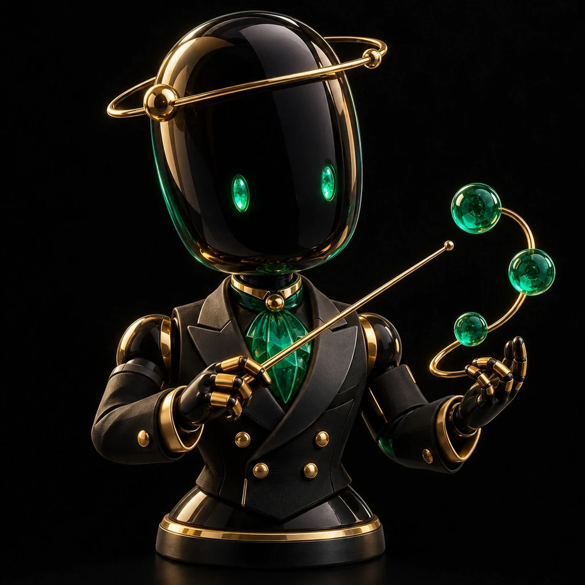
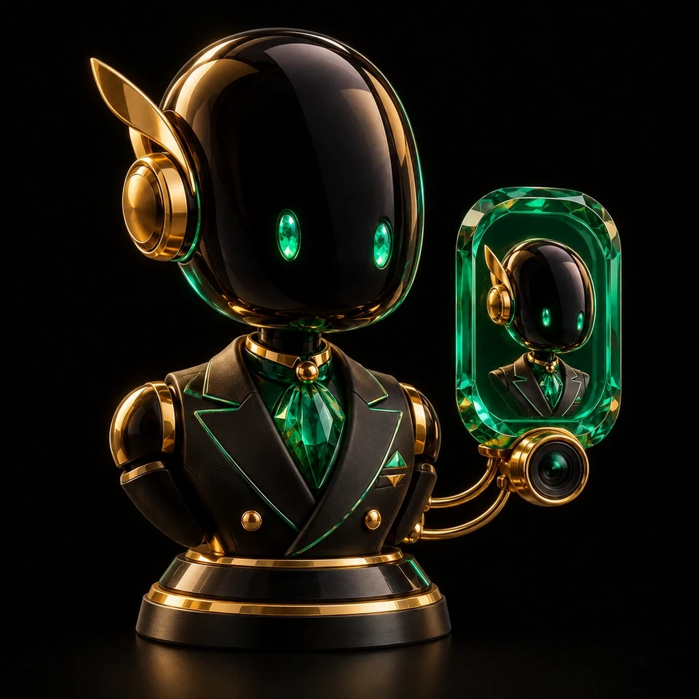

Каждый процесс отдельно
- Бриф теряется в переписках
- Контекст приходится пересказывать
- Материал переходит из рук в руки
- Непонятно, кто проверяет финал
1 Мозг + 8 Агентов: от исходника до проверенного продукта, контента и воронки. Решение о выпуске всегда за тобой.
Цифровой практикум на 3 вечера: пошаговые видеомодули в записи, готовые ИИ-шаблоны и ИИ-диагностика. Проходите самостоятельно в удобное время и повторяйте шаги на своей задаче.
100% автономный формат, без расписания и ожидания группы. СБП и карты на странице оплаты. Мастер-группа приобретается отдельно.

Начните с учебной задачи. Решение о выпуске материала остаётся за вами.

ДирижёрПродукт
Видео и цифровой двойникКаруселиСайт и оформлениеБоты и воронкиСтатьи и SEOДежурный и куратор20 AI-персонажей и примеры проверки задач. Это редакционные учебные сообщения, не переписка покупателей и не подтверждённые результаты.
Сравни процессы, а не обещания. Ниже можно подставить собственные числа и проверить стоимость ручной рутины.
Сравнение со штатом за 350 000 ₽: ориентир сценария, а не измеренный ФОТ, обещание замены сотрудников или гарантированная экономия. Подписки, инфраструктура и время проверки учитываются отдельно.
От отдельного запроса — к первой связанной задаче.
Ты задаёшь вопросы, переносишь ответы и собираешь процесс вручную.
Одна повторяемая задача получает свой рабочий порядок, входные данные и проверку.
Несколько задач связаны общей базой проекта, передачей результатов и проверкой перед выпуском.
Это уровни организации работы, а не прогноз дохода. Результат зависит от задачи, исходных данных и практики.
Посчитайте, сколько времени занимает рутина. Это ваши числа и ваши допущения, а не обещание заработка или экономии.
Для команды: люди × часы в день × стоимость часа × 22 рабочих дня
Один продукт, страница и понятный путь до оплаты
Заявки × конверсия × прибыль с заказа. Это отдельная гипотеза, не прибавленная к стоимости рутины
Поставь задачу. Передай проверенные исходники. Получи артефакт и критерии приёмки. Разрешай внешние действия отдельно.
Собирает контекст, назначает роли и возвращает результат на твою проверку.
Иллюстрированная карта обязанностей, не число подключённых исполнителей.Вопрос аудитории → предложение → состав конкретного артефакта.
Исходник → сценарий → монтажная карта → проверка фактов и подачи.
Одна тема → последовательность слайдов → понятное действие читателя.
Предложение → страница → безопасный переход к оформлению.
Кодовое слово → полезный материал → следующий добровольный шаг.
Вопрос → проверенные источники → полезный ответ, без обещания позиций.
Собирает вопросы, критерии приёмки и пример отчёта по задачам.
Это демонстрация маршрута, не переписка покупателя и не подтверждение оплаты.
Шесть ситуаций. Один небольшой первый шаг вместо попытки автоматизировать всё сразу.
Хочется понятного пути от знакомства до заявки, а не ожидания следующей рекомендации.
Выбрать свой маршрут →Нужно проверить, как контент и статьи могут дополнять платное продвижение твоего продукта.
Выбрать свой маршрут →Идея, сценарий, пост и публикация живут отдельно и требуют постоянного переключения.
Выбрать свой маршрут →Хочется сначала проверить предложение и путь до заявки, а не ждать большой цифры подписчиков.
Выбрать свой маршрут →Ответы в чате есть, но их ещё нужно связать с продуктом, материалами и следующим действием.
Выбрать свой маршрут →Нужен способ выбрать одну гипотезу и проверить её на конкретной задаче.
Выбрать свой маршрут →Сайт, бот, оформление, видео, карусель и статья. Переключай реальные элементы интерфейса и проверяй путь от исходника до приёмки.
Образец ответа, упражнение и самопроверка. Преподаватель сверяет лексику, сохраняет утверждённую версию и только затем разрешает выдачу.
Заранее подготовленный диалог. Ничего не отправляется.

Пошаговые видеомодули в записи, готовые ИИ-шаблоны и ИИ-диагностика. Самостоятельно, в своём темпе. Мастер-группа отдельно.
Оплата не выполнялась. Здесь нет ввода карты или подтверждения платежа.
Открыть реальное оформление ↗AI-сцена. План: тезис → видимое действие → проверка перед публикацией. Охваты не измерялись.
Все 8 сцен и 10 видеосценариев →Не смешивай несколько предложений в одной карусели.
Исходник → объяснение → пример → следующий шаг.
Убери неподтверждённые цифры и обещания. Утверди перед выпуском.
Факты сверены. Образец проверен преподавателем. Нет выдуманных результатов и обещаний позиций в поиске.
Локальная демонстрация. Не подключена к аккаунтам, оплатам или публикации.
Числа иллюстрируют модель, а не реальные продажи или доход. Фактический результат здесь не заявлен.
Шесть направлений, четыре шага в каждом. Переключение синхронизируется с калькулятором, но никогда не меняет твои финансовые допущения.
Один вопрос и небольшой цифровой продукт.
Подтверждённые факты, аудитория и границы продукта.
План продукта, страница и маршрут до оформления.
Сверить содержание с исходником и пройти тестовый запрос.
Определить чек и проверить спрос на небольшом платном тесте. Это план проверки, не обещание первой продажи.
Цена отложенной задачи рассчитывается только из твоих допущений.
Подставить мои числа →Один организационный шаг перед консультацией.
Согласованные правила услуги, без личных историй клиента.
Анкета предзаписи, памятка и карточка заявки.
Проверить поля, ответ и приватность на вымышленных данных.
Определить чек и проверить спрос на небольшом платном тесте. Это план проверки, не обещание первой продажи.
Цена отложенной задачи рассчитывается только из твоих допущений.
Подставить мои числа →Одна повторяемая причина возвращаться.
Состав материалов, правила доступа и отмены.
Маршрут участника и план регулярной ценности.
Проверить тестовую выдачу и отзыв доступа без реального списания.
Определить чек и проверить спрос на небольшом платном тесте. Это план проверки, не обещание первой продажи.
Цена отложенной задачи рассчитывается только из твоих допущений.
Подставить мои числа →Один товар и один покупательский вопрос.
Проверенные свойства, наличие и ограничения доставки.
Карточка товара и пакет ответов для контента.
Сверить наличие и обещания; доставку подтверждает человек.
Определить чек и проверить спрос на небольшом платном тесте. Это план проверки, не обещание первой продажи.
Цена отложенной задачи рассчитывается только из твоих допущений.
Подставить мои числа →Одно целевое действие пользователя.
Вход, ответ, разрешения и критерии приёмки.
Вертикальный срез и маршрут обратной связи.
Проверить успех, пустой ввод и понятную ошибку.
Определить чек и проверить спрос на небольшом платном тесте. Это план проверки, не обещание первой продажи.
Цена отложенной задачи рассчитывается только из твоих допущений.
Подставить мои числа →Один ограниченный этап работы клиента.
Согласованный бриф, права и ответственный за приёмку.
Паспорт проекта, смета и чеклист передачи.
Проверить результат по брифу до передачи доступов и подписания.
Определить чек и проверить спрос на небольшом платном тесте. Это план проверки, не обещание первой продажи.
Цена отложенной задачи рассчитывается только из твоих допущений.
Подставить мои числа →Восемь вопросов без email, регистрации и передачи данных. Это самооценка и готовый план, а не ответ подключённой нейросети или прогноз дохода.
Показан вымышленный учебный проект .colibrios. Это реальные опубликованные файлы-примеры, не личная память авторов или агентов.
Учебный проект: памятка преподавателя. Цель: собрать один материал из проверенных правил. Источники, черновик и проверка хранятся отдельно. Внешние действия разрешает человек.
Черновик ждёт проверки. Один вопрос требует уточнения. Внешние действия не выполнялись.
Часовой пояс, расписание и разрешения настраиваются отдельно. Это не текущая телеметрия.
Восемь коротких AI-сцен и десять видеосценариев по задачам. Смотри со звуком по нажатию и выбирай удобную скорость.
Восемь демонстрационных монтажей и AI-сцен. Звук включается только по вашему нажатию.
На странице есть короткие демонстрационные клипы. Они не заменяют отдельный четырёхминутный разбор. Пока можно посмотреть программу и примеры систем.
Три вечера — структура самостоятельной практики, а не даты занятий. Смотрите пошаговые видеомодули в записи, применяйте готовые ИИ-шаблоны и проверяйте результат. Полное внедрение зависит от сложности и доступов.

На выходе: выбранная задача, подготовленный исходник и первый учебный результат
Ваше решение остаётся последнимНа выходе: понятная схема заявки, оплаты и выдачи. Подключение платежей требует отдельной настройки.
Доступы и платежи только по разрешениюНа выходе: сценарий, монтажная карта, карусель, пост и статья с одним целевым действием
Публикация после вашего «ДА»Дополнительный модуль в записи предусмотрен в VIP. Точный состав и доступность проверь в карточке Концентрата перед оплатой.
Шесть модулей платформы и три вечера практикума с бонусом — разные разделы программы. Модуль 01 открыт, 02–06 закрыты до подтверждённой оплаты.
Бесплатно вы получите расчёт потерь и одно узкое место. Практические модули 02–06 остаются закрыты до подтверждённой оплаты.
Бесплатно: стоимость рутины, свободная мощность и одно узкое место
Открыто · Tier 0Знания проекта и роли команды
Закрыто · платный доступ от 990 ₽Материалы и контроль качества
Закрыто · платный доступ от 990 ₽Путь от интереса к платному продукту
Закрыто · платный доступ от 990 ₽Коммерческий процесс и передачи
Закрыто · платный доступ от 990 ₽Приёмка, интеграции и развитие
Закрыто · платный доступ от 990 ₽Самостоятельный ритм. Без расписания и ожидания группы. Возвращайся к нужному фрагменту, пока не получишь проверяемый артефакт.
Выбери нужный видеомодуль в записи.
Подставь собственный проверенный исходник.
Сверь результат с критериями приёмки.
Зафиксируй одобренную версию и следующий шаг.
Начни с подготовленного примера куратора. Это демонстрация помощи, не обещание подключённого сервиса.
Посмотреть пример →AI-персонажи, не отзывы подтверждённых покупателей. Исходная рутина и целевой артефакт показывают задачу проверки, а не измеренные результаты.
Учебные сценарии с ИИ-персонажами. Это не отзывы подтверждённых покупателей.
Семь частей одного рабочего процесса. Ниже открытая сценарная смета 620 000 ₽ для сравнения с ColibriOS, не исследование рыночных цен и не обещание сэкономить эту сумму.
Индекс проекта и проверенные исходники
Чувствительные данные не входят в демонстрациюКарта задач и ответственности
Решение остаётся за владельцем проектаПредложение и состав одного артефакта
Спрос нужно проверять отдельноСледующий шаг и маршрут оформления
Хостинг и интеграции уточняются отдельноСхема заявки и ответа
Рассылки не активируются демонстрациейЧерновики в разных форматах
Публикация только после проверкиЧеклист и передача одобренной версии
Точный платный объём в карточке продуктаvs ColibriOS: самостоятельный вход за 990 ₽, мастер-группа от 79 990 ₽. Сравнивай точный состав работ, а не только итоговую цифру.
Сравнить четыре формата →Смета иллюстративная, не котировки подрядчиков. Подписки, оборудование, инфраструктура и внедрение не считаются бесплатными.
Полный целевой контур: 200+ скиллов, 33 стража качества, 989 рецептов. Это ориентир архитектуры, а не обещание выдать весь контур за 990 ₽. Фактический состав проверь в выбранном формате.
Доступна прямо здесь. Без покупки, email и регистрации.
Моя задача: [одно действие]. Исходник: [проверенные факты]. Черновик: [нужный материал]. Проверка: [кто и по каким признакам примет результат].
Пример: памятка для знакомства на английском → утверждённый образец → упражнение → проверка преподавателя.
Бесплатная карточка не открывает модули 02–06. Состав бонусного модуля 4 VIP проверяется перед оплатой.
Заранее подготовленный учебный диалог доступен в любое время. Подключённый AI-чат и SLA поддержки здесь не заявлены.
Выбери вопрос: покажем пример подсказки к заданию.
Поддержка: контакт на странице оформления.
Четыре формата с разными границами работы. Концентрат в записи автономный, мастер-группа и внедрение приобретаются отдельно.
Начать с бесплатной диагностики →
100% автономный цифровой практикум от Татьяны и Дениса

Ведущий: Татьяна Колибри
Собрать процесс самому с опорой на готовую архитектуру

Ведущий: Денис
Бизнес, контент и воронки в одном управляемом процессе

Ведущий: Денис
Архитектура и разбор процесса с Татьяной и Денисом
Для Light предусмотрен переход на Pro в течение 48 часов по условиям акции. Условия и право на переход необходимо подтвердить до оплаты.
Личное ознакомительное окно на этом устройстве, не резерв участия
Таймер показывает только личное ознакомительное окно Light → Pro. Не резерв, не право на скидку. Условия 48-часового апгрейда подтверждаются до оплаты. Тарифы не гарантируют доход.
Для команд с повторяемыми задачами и владельцем процесса. Сначала диагностика, границы данных и измеримый пилот, потом масштабирование
Диапазон внедрения: 300 000–600 000 ₽
Состав работ, этапы и сроки фиксируются отдельно. Заявка на диагностический разговор не означает покупку внедрения
Без вопросов о покупательском бюджете. Без передачи рабочих доступов
Метод ТД Colibri: идеи и голос контента вместе с управляемой технической архитектурой. Стилизованные образы авторов, не фотографии.
Формат, техника, оплата и границы работы с данными.
В удобное время. Три вечера — структура самостоятельного практикума, а не расписание занятий.
Это структура самостоятельного цифрового практикума: три учебных этапа с видеомодулями в записи, готовыми ИИ-шаблонами и ИИ-диагностикой. Проходите в своём темпе, начинайте в удобное время. Полноценное внедрение зависит от сложности, доступов и приёмки
Для старта достаточно описать свой процесс и проверить результат. Интеграции, данные, права и платежи требуют технической настройки. На B2B-маршруте это отдельный объём работ
Нет. Результат зависит от задачи, исходных данных, доступов и практики. Учебные истории не являются результатами покупателей.
Двенадцать обозначает роли рабочего процесса, а не обещание сократить двенадцать штатных единиц. Владелец отвечает за решения, доступы, проверку и внешние действия
Сейф адаптирован под Telegram Mini App, включая безопасные отступы, нижнюю навигацию и отключение вертикальных свайпов в поддерживаемых версиях. В обычном браузере основные функции тоже работают
Подключения и сторонние подписки могут потребовать отдельной настройки и оплаты. Их состав нужно проверить для выбранной задачи.
Подключение платежей зависит от конфигурации продавца. Оформление проверяет доступность платёжного обработчика. Пока продавец и платёжный маршрут не подтверждены, оплата не активируется; карточка заказа остаётся локальным черновиком
Видеомодули в записи, готовые ИИ-шаблоны и ИИ-диагностика для самостоятельной практики на три вечера. Состав и доступность бонусного модуля 4 проверь перед оплатой.
Диагностика и одно узкое место. Практические модули 02–06 не открываются бесплатно.
Расчёты выполняются в браузере. Форма никуда не отправляет контакт без явного согласия и настроенного защищённого обработчика. В автономном режиме можно скачать заявку и передать её самостоятельно
Концентрат в записи: три вечера самостоятельной практики, готовые ИИ-шаблоны и ИИ-диагностика. VIP — 990 ₽
Кодовое слово для маршрута: ХОЧУ / СТАРТ